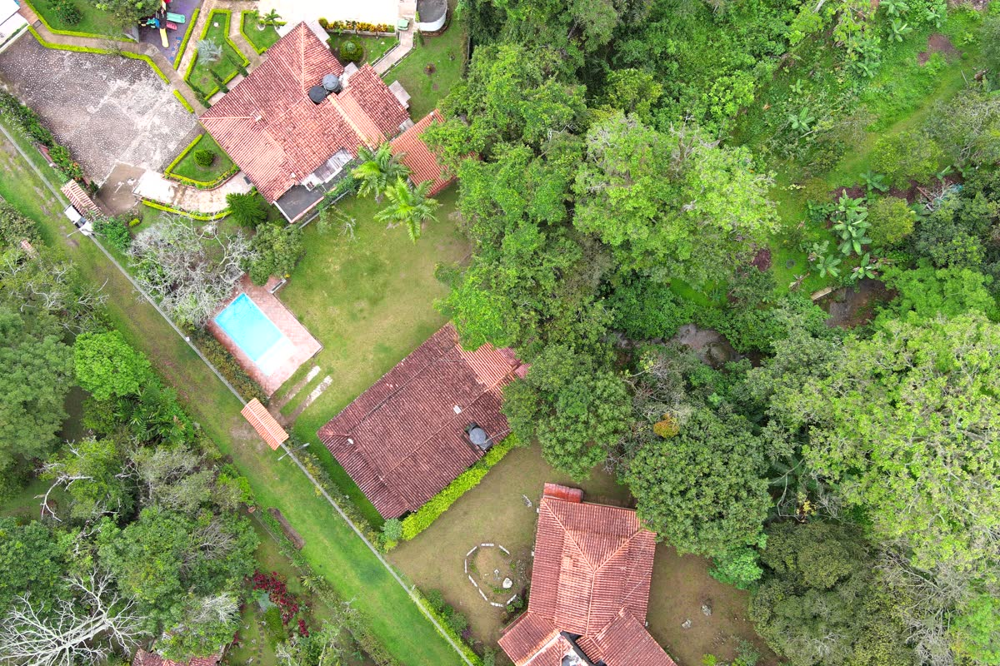

EDIFICACIÓN · USO MIXTOC-001
Estudio geotécnico para edificación campestre.
SECTOREDIFICACIÓN COMERCIAL
ZONANORTE DE SANTANDER · CO
AÑO2025
ALCANCEINFORME COMPLETO + ANEXOS
Caracterización estratigráfica y mecánica de lote con vocación campestre. Sondeos SPT, ensayos de laboratorio, capacidad portante, asentamientos, análisis sísmico NSR-10, levantamiento con dron, MDT y ortofoto. Cierre con recomendaciones de cimentación y drenaje superficial.
Solicitar alcance similar →